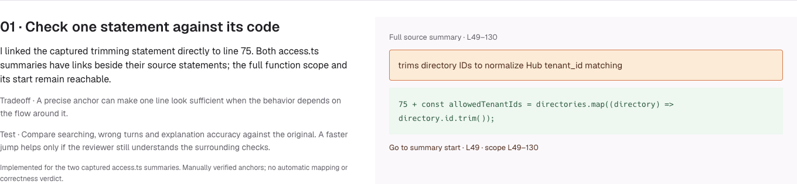
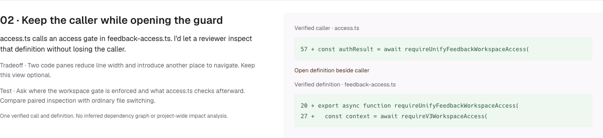
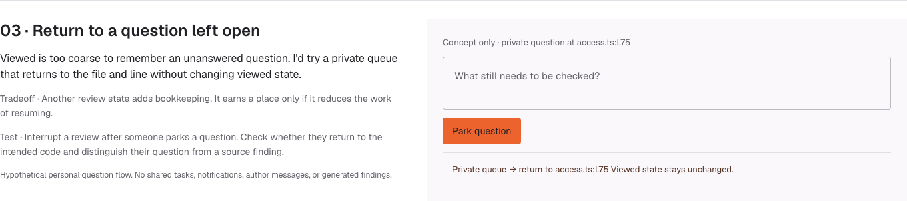

What I'd test next
I chose this direction because a reviewer can still read the PR file by file and check each explanation against the diff. The other approaches changed the reading order. I'd test that before making it the default.
Direct statement links and one caller/guard return path now work in the prototype. Simultaneous paired panes and a review-wide private question queue remain Paper concepts. All use the same Formbricks snapshot.
1 · Check one statement against its code

Read the hypothesis, tradeoff and test
Hypothesis The six source-summary points link directly to their manually mapped code. The full source summary and function context remain available.
Tradeoff A precise anchor can make one line look sufficient when the behavior depends on the flow around it.
Test Ask a developer to find the code supporting the trimming statement and explain what is normalized. Compare wrong turns and explanation accuracy against the original.
Boundary Implemented for the two captured access.ts summaries. Manually verified anchors; no automatic mapping or correctness verdict.
2 · Keep the caller while opening the guard

Read the hypothesis, tradeoff and test
Hypothesis access.ts calls an access gate in feedback-access.ts. I'd let a reviewer inspect that definition without losing the caller.
Tradeoff Two code panes reduce line width and introduce another place to navigate. Keep this view optional.
Test Ask where the workspace gate is enforced and what access.ts checks afterward. Compare paired inspection with ordinary file switching.
Boundary The prototype implements one Inspect guard / Return to access.ts route. This sketch proposes simultaneous panes. No inferred dependency graph or project-wide impact analysis.
3 · Return to a question left open

Read the hypothesis, tradeoff and test
Hypothesis Viewed is too coarse to remember an unanswered question. I'd try a review-wide private queue that returns to the file and line without changing viewed state.
Tradeoff Another review state adds bookkeeping. It earns a place only if it reduces the work of resuming.
Test Interrupt a review after someone parks a question. Check whether they return to the intended code and distinguish their question from a source finding.
Boundary Hypothetical personal question flow. No shared tasks, notifications, author messages, or generated findings.
Layer changes and stale anchors
In production, show the changes assigned to the layer first, expand surrounding code in place, and label the boundary when opening the full file. Full added file and Captured ranges in this prototype do not recreate semantic diffs.
If a new commit moves an anchor, stop the jump and say “Code changed since this summary.” Offer the pinned version or updated file. Test modified patches and moved anchors before treating this as a complete review workflow.